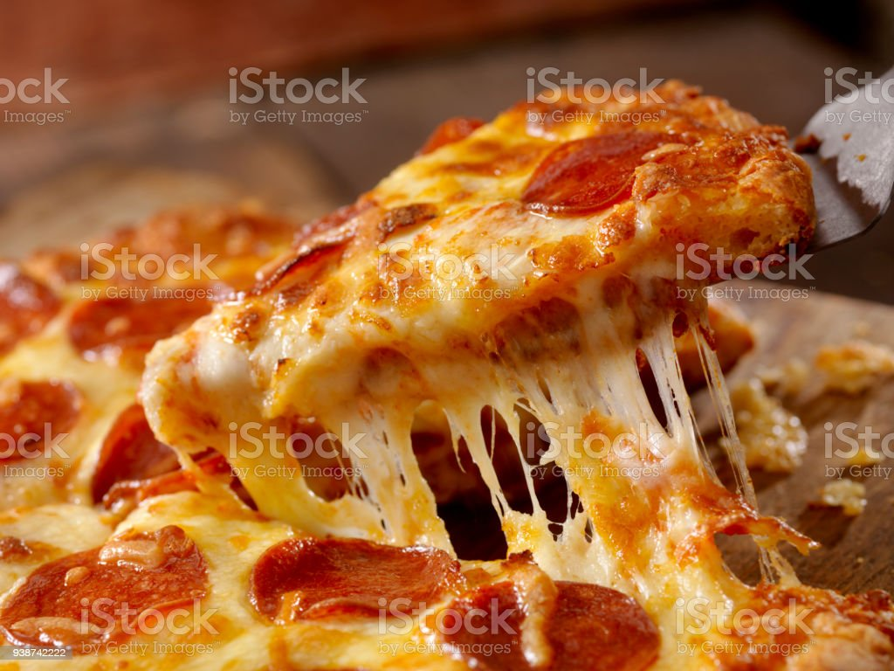
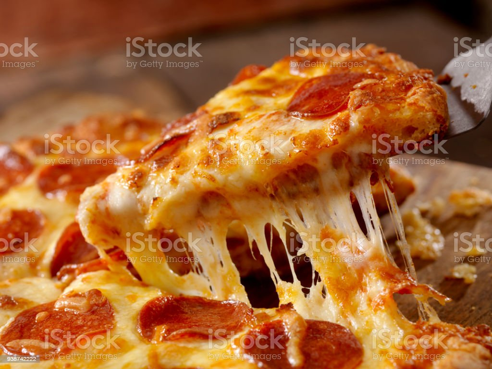

Pizza Rasturent
Rasturent is the world's most popular pizza today!

 

Rain takes away the pep in everyone’s step. It gets in the way of plans and it often carries a melancholy aura. However, rain cannot be avoided. Summer weather in Murphy, TX threatens rain somewhat frequently. Pop-up storms happen throughout the summer, as do random stretches of downpour. So, what are you supposed to do these rainy days? Eat gourmet pizza Murphy, TX.
gourmet pizza Murphy, TXWhat is something you can do that is satisfactory, productive, and doesn’t require you to leave your residence? Order a gourmet pizza Murphy, TX! It’s a satisfying option because pizza is delicious, it’s productive because you have to eat, and it’s a way to avoid the unwelcome weather
We all have those days where nothing sounds more appealing than a hot, mouth-watering pizza. There is something about pepperoni, cheese and sausage that have a hypnosis effect on people. The classics just never get old.
Speaking of classics, Mogio’s offers “The Italian Classic”. This pizza consists of pesto sauce, roasted chicken, fresh basil, roma tomatoes, fresh garlic, olive oil and mozzarella. It is among the favorites of Mogio’s customers. Though, if you are still caught on the pepperoni, sausage and cheese idea, perhaps our King-Deluxe sounds most appealing. The King-Deluxe consists of pepperoni, beef, sausage, Canadian bacon, mushrooms, black olives, red onions, and a mix of peppers. Of course, we can adjust the pizza to your liking if you do not like each and every one of those toppings.
On gloomy, rainy days, doesn’t a pizza with a Mediterranean or Hawaiian appeal seem on point? Mogio’s offers both a Mediterranean Pizza and a Hawaiian Sunrise pizza. While tasting delicious, these creative options have an inviting, standout look to them.
Our Mediterranean is topped with spinach, roma tomatoes, red onions, fresh mushrooms, artichoke hearts, and feta and mozzarella cheese. On the other hand, our Hawaiian Sunrise is made up of Canadian bacon, pineapple, roasted cashews, sun dried cranberries, and mozzarella and cheddar cheese. Certainly, one of these two pizza options will brighten up your day.
You can spend your rainy days however you’d like; we are just here to offer a suggestion. Spend your rainy day with Mogio’s Gourmet Pizza, whether it be at one of our pizza restaurants or by us delivering a pizza to your front door. Contact Mogio’s today! Also, please visit our blog to get an inside look at the greatness of gourmet pizza Murphy, TX.
 >
>
Rasturent is the world's most popular pizza today!
Our Mediterranean is topped with spinach, roma tomatoes, red onions, fresh mushrooms, artichoke hearts, and feta and mozzarella cheese. On the other hand, our Hawaiian Sunrise is made up of Canadian bacon, pineapple, roasted cashews, sun dried cranberries, and mozzarella and cheddar cheese. Certainly, one of these two pizza options will brighten up your day
| Menu | Price |
|---|---|
| Pizza | 200Tk |
| Chiken | 300Tk |
My favorite color is blue red!
Do not forget to buy milk today.
WWF's goal is to:
Build a future where people live in harmony with nature.
We hope they succeed.
Message from my computer:
File not found.
Press F1 to continue
H2O
a2+2ab+b2